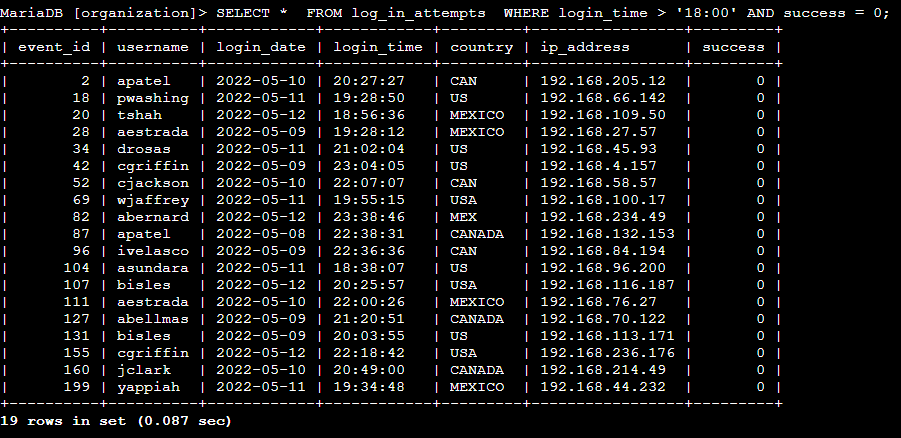
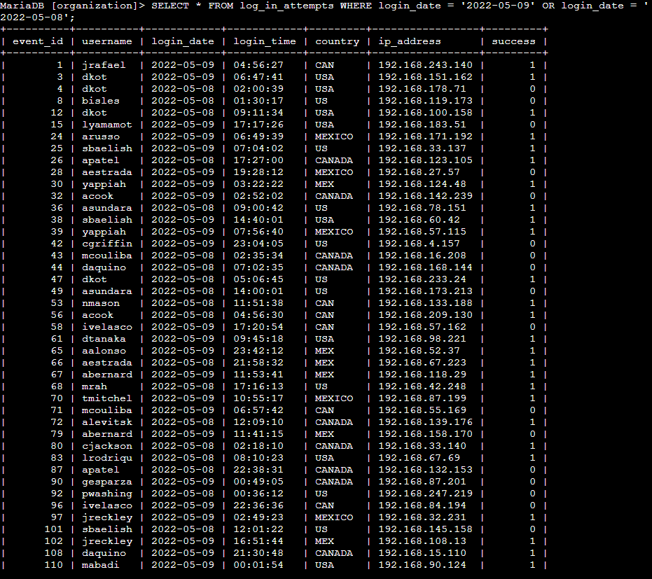
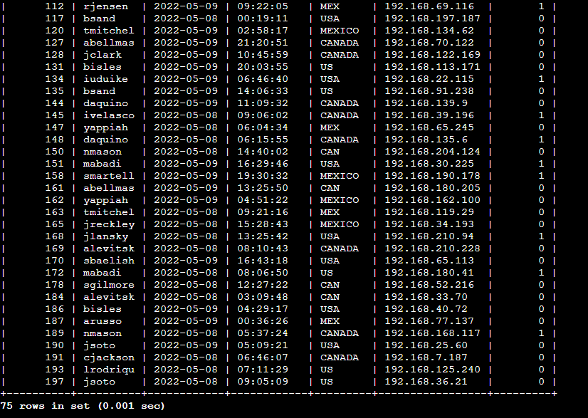
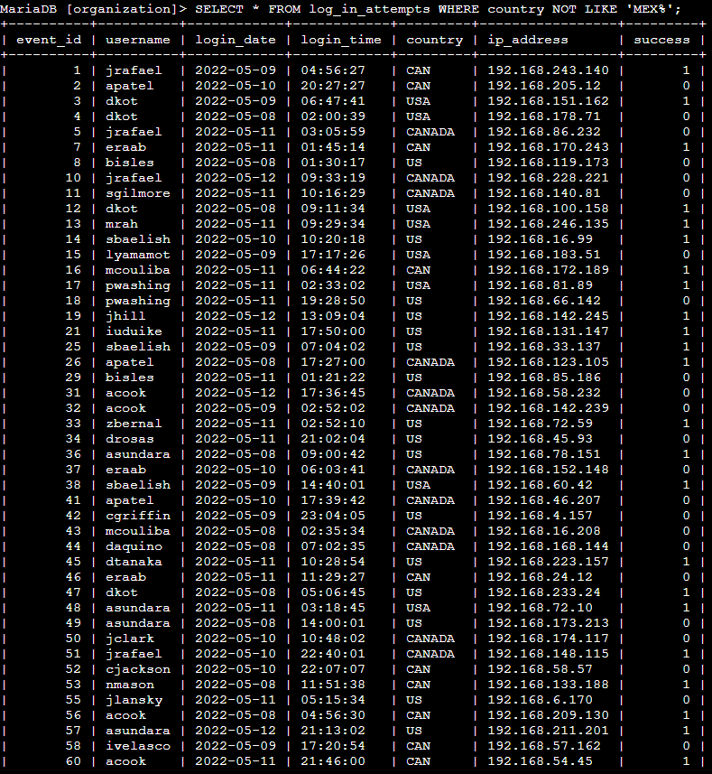
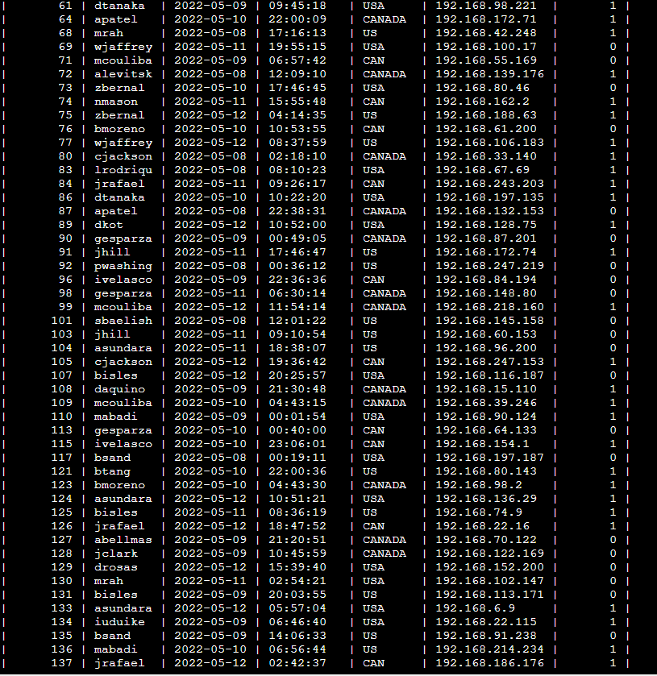
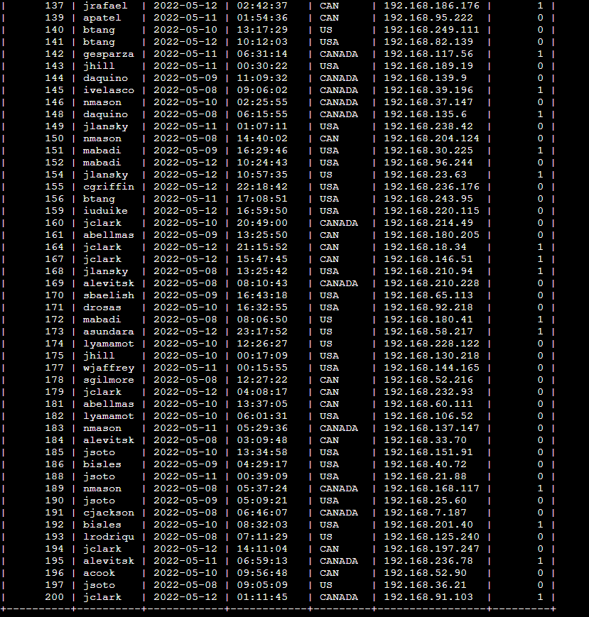
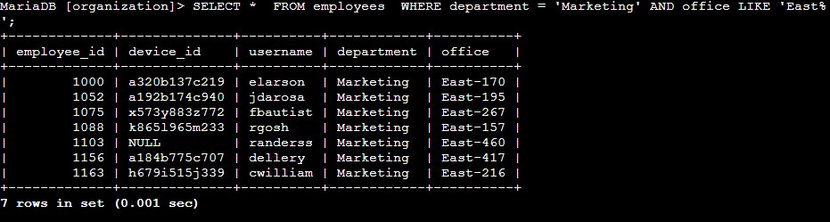
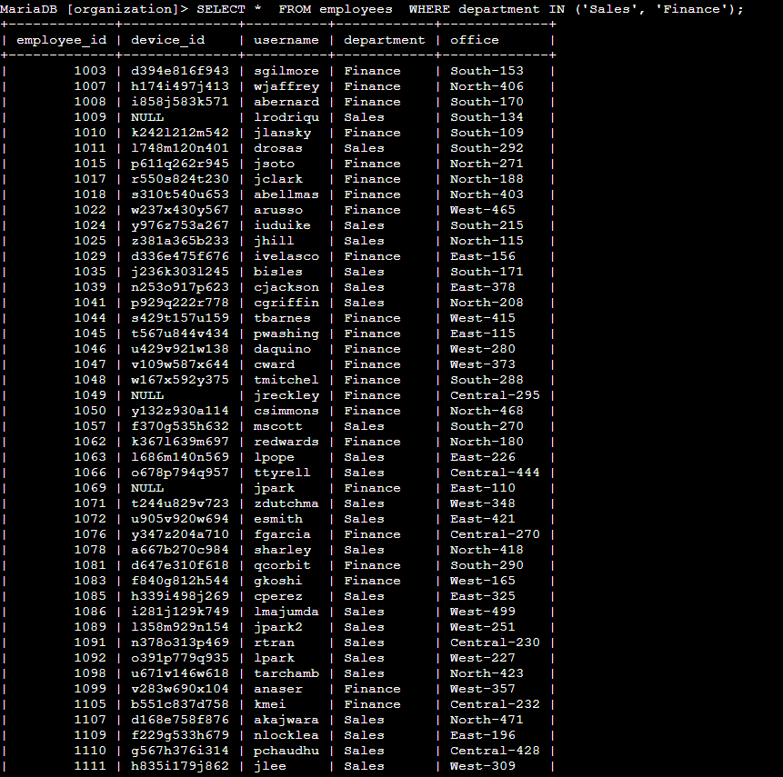
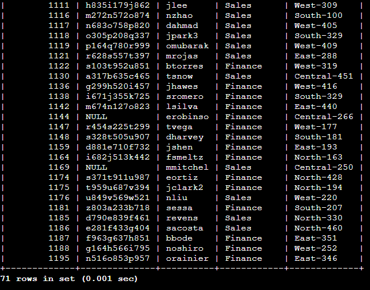
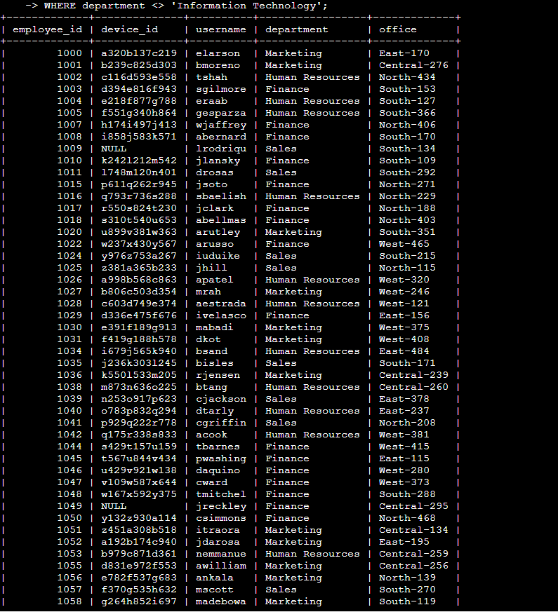

Security Investigation and Enhancement through SQL Queries
Apply filters to SQL queries
Project description
I'm using SQL queries to dig into potential security issues tied to login attempts and employee machines in a big organization. By delving into the 'log_in_attempts' and 'employees' tables, I'm pinpointing and fixing security concerns to keep the system safe. These SQL queries help me filter and extract specific data, letting me investigate failed logins, suspicious events, and gather employee details based on different criteria. This project demonstrates how SQL can be a powerful tool in bolstering cybersecurity efforts.
Retrieve after hours failed login attempts:
In this query, I used the SQL statement:
SELECT * FROM log_in_attempts WHERE login_time > '18:00' AND success = 0;

This query retrieves records from the 'log_in_attempts' table where the login attempts occurred after 18:00 and were unsuccessful (indicated by a 'success' value of 0 or FALSE). The result shows 19 instances of failed logins after business hours, including details such as username, date, time, country, IP address, and success status. This information helps identify potential security incidents outside normal working hours.
Retrieve login attempts on specific dates:
Task: You recently detected a suspicious event on 2022-05-09 and need to investigate login attempts on that day and the preceding day. Use SQL filters to create a query that identifies all login attempts occurring on 2022-05-09 or 2022-05-08 from the log_in_attempts table


SELECT * FROM log_in_attempts WHERE login_date = '2022-05-09' OR login_date = '2022-05-08';
This query retrieves records where the login attempts fall on either 2022-05-09 or 2022-05-08. The OR operator combines the conditions, providing a comprehensive view of login activities on the specified dates.
Retrieve login attempts outside of Mexico:



SELECT *
FROM log_in_attempts
WHERE country NOT LIKE 'MEX%';
This query will give you a list of login attempts that occurred outside of Mexico, excluding both 'MEX' and 'MEXICO' entries in the country column.
Retrieve employees in Marketing:
Task: Your team wants to perform security updates on specific employee machines in the Marketing department. You’re responsible for getting information on these employee machines and will need to query the employees table. Use filters in SQL to create a query that identifies all employees in the Marketing department for all offices in the East building.
Retrieve employees in Finance or Sales:

The SELECT * statement retrieves all columns from the employees table for the matching rows.
The FROM employees specifies the table from which the data is retrieved.
The WHERE clause is used to filter the rows. The condition department IN ('Sales', 'Finance') ensures that only rows where the department is either 'Sales' or 'Finance' are selected.
This query will give you a list of employees who work in either the Sales or Finance departments.
Retrieve all employees not in IT:
The SELECT * statement retrieves all columns from the employees table for the matching rows.
The FROM employees specifies the table from which the data is retrieved.
The WHERE clause is used to filter the rows. The condition department 'Information Technology' ensures that only rows where the department is not 'Information Technology' are selected.
This query will give you a list of employees who are not in the IT department.